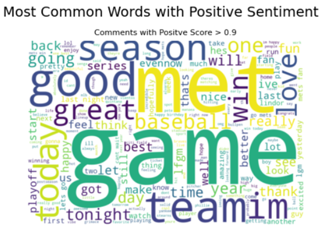
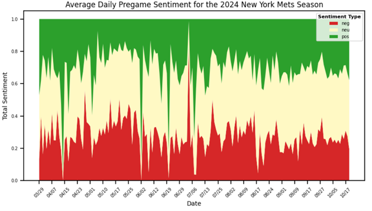
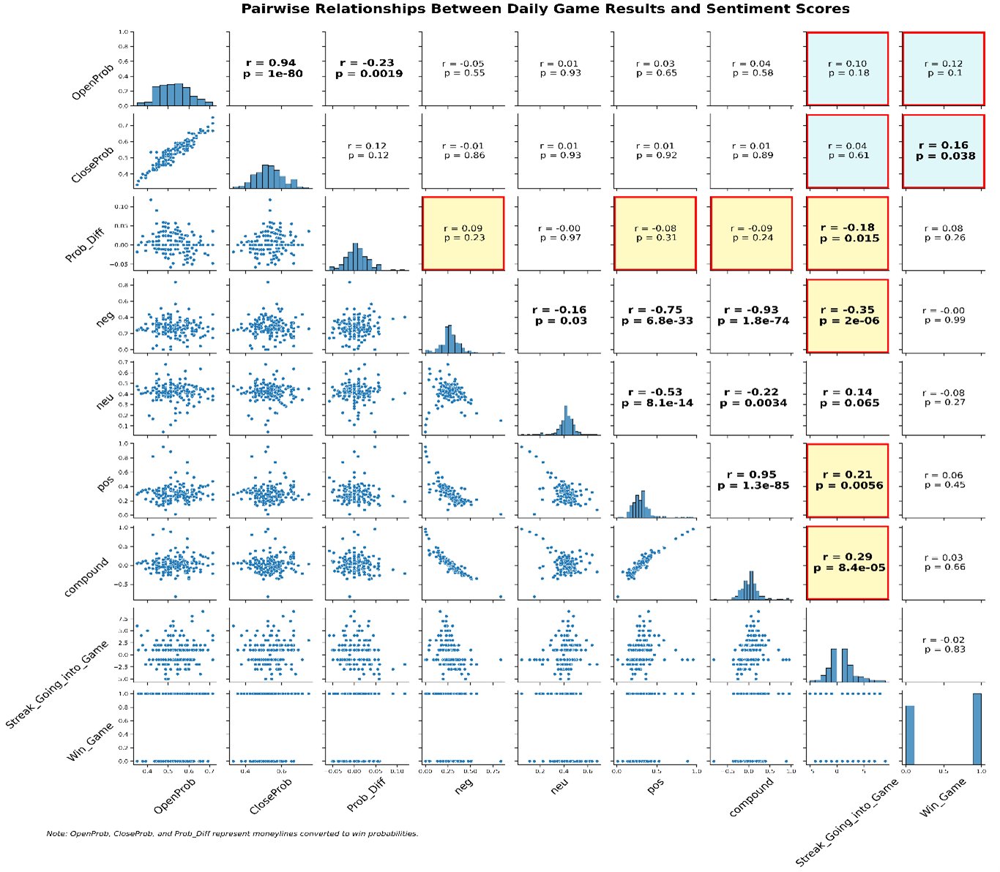

Introduction
It is generally understood that when sportsbook makers set betting lines, their goal is not to predict the actual outcome of a game, but rather to balance the money wagered on each side. By doing so, they ensure a profit through the “vig”, which is the built-in fee or commission charged on each bet. If significantly more money comes in on one side, the sportsbook may adjust the line to make the other side more attractive, encouraging balanced action. For instance, if the Mets open at -110 (a $110 bet wins $100), but the majority of money placed on the Mets, the line might shift to -130, requiring a $130 bet to win $100. This change is designed to incentivize bets on the opposing team and rebalance the money. Understanding this concept, I will attempt to understand if or how public sentiment may play a role in setting these lines.
I will be analyzing the daily sentiment of the New York Mets 2024 season from comments the ‘Pregame Thread’ in the r/NewYorkMets subreddit from reddit.com to see if this sentiment has any influence on betting lines. I chose the Mets because they are a relatively popular team, and I felt would be likely to generate a larger number of comments relative to other teams. Using this sentiment, I will create a word cloud highlighting the most commonly used positive and negative words. Additionally, I will create an area map displaying daily sentiment to compare daily changes in positive and negative sentiment. Lastly, I will combine this data with MGM’s daily betting lines, line movement, and score results from www.sportsbookreview.com into a dataframe. I will use this dataset to test for statistical significance (measured at p < .05) between daily moneyline, line movement, game outcome and pregame sentiment.
Data Cleaning and Model Building
After gathering data from the Reddit API, I filtered out all comments each day that occurred after the start of each game to keep the focus on pregame sentiment. Additionally, I removed hyperlinks and comments that were noted as deleted or removed by Reddit moderators. After doing this I inputted the comments into the RoBERTa model. The reason for using RoBERTa is that I felt Reddit comments have a similar slang to twitter (which the model was trained on). Below we see the word cloud showing the most common positive.
Comparing Pregame Sentiment Throughout the Season
Next, I grouped the comments by game date and averaged each of the neutral, positive, and negative sentiment scores for the given game date. Below is an area map showing the averaged sentiment scores throughout the New York Mets 2024 season.
The spikes may indicate days where there were only a few comments causing high variation in sentiment. Outside of the large spikes it looks as though the positive and negative scores are relatively consistent throughout the season. However, there does look to be some slightly consistent increases in negative sentiment from the beginning of the season until early April, and again almost throughout the entire month of May. This may be attributed to the Mets starting the season on a losing streak and slumping again, going an abysmal 9-19 in May.
An Attempt to Connect Daily Sentiment to the Daily Betting Moneylines
Next, I created a dataframe connecting the daily sentiment scores with opening and closing moneylines along with game outcomes for the 2024 season. A couple of things to note before analyzing the plot. OpenProb and CloseProb are moneyline values converted into win probability, ProbDiff is the difference in probability from when the line opened until the line closed, ‘compound’ value is positive minus negative sentiment scores, and ‘Streak_Going_into_Game’ is the number of consecutive games won or loss going into the game.
I think there are a few interesting things going on when analyzing the p-values and correlation coefficients:
Putting It All Together
The winning or losing streak drive fan sentiment based on the direction of the streak. However, the movement of the betting line seems to go in the opposite direction of sentiment, which is counterintuitive. This suggests that fan sentiment is already baked into the opening line, and as sharper money enters the market later, the line adjusts to better reflect true probabilities.
For example, if the Mets are on a large winning streak, we would expect increased positive sentiment from fans potentially leading to overconfidence in their chances. However, instead of the betting line shifting further in favor of the Mets as more money comes in on the bet, the line seems to move against this sentiment. This inverse relationship suggests that fan sentiment is already priced into the opening line, and as more informed money (professional bettors) enters the market closer to game time, the line corrects to reflect a more accurate probability of winning. This also looks to be shown in the closing line having a lower p-value in the game outcome from the pairwise plot.
Why Understanding Betting Line Movement Matters
In 2024 season (174 games), if we would have bet $100 on a Mets victory for every game based on opening line value, we would have returned 4.06%, if we would have bet on the closing line value, we would have returned 2.49%, betting on the optimal line value (the opening or closing line that provides the best payout on a Mets win returned 5.15%, and lastly, if we would have bet the opening line and only on games where the line moved in the Mets favor (81 of the 174). The latter are games we think there is negative fan sentiment impacting the opening line, and then professional bettors move the line down to a more accurate betting line outcome. These games would have returned 18.92% on the season. Understanding line movement and why it moves can provide a large payoff over the course of the season.
Next Steps
This analysis has only looked at Mets fan sentiment from one source but looks promising. We would ultimately want to capture the Mets opponent’s sentiment as well as finding additional sources for sentiment analysis. The added information would hopefully lead to stronger predictions. After adding the data, we would want to build a machine learning model with the response variable being the ROI outcome of a bet made and test it. This would allow us to have a general idea on what we can expect for a return in future bets.
Conclusion
We scraped comments from a single reddit source. After analyzing the sentiment using RoBERTa, we compared it to the Mets daily betting lines and outcomes of those betting lines. Using this analysis, we see how fan sentiment may be playing a role in setting betting lines for the New York Mets baseball games and all sporting events throughout the world.